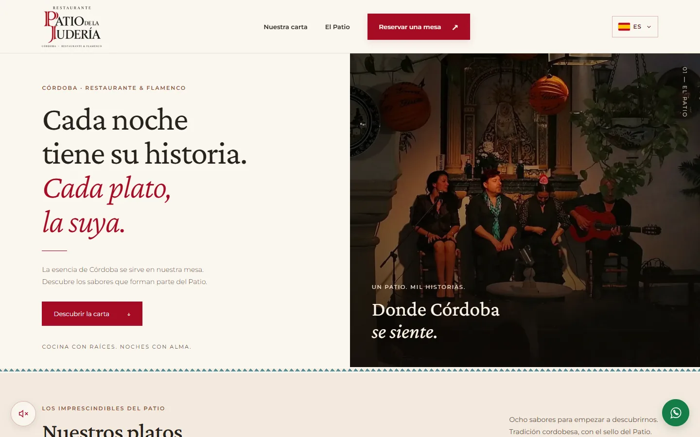
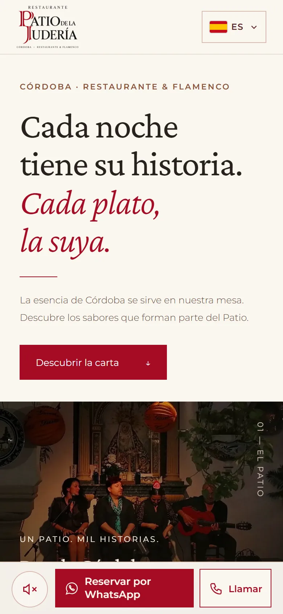
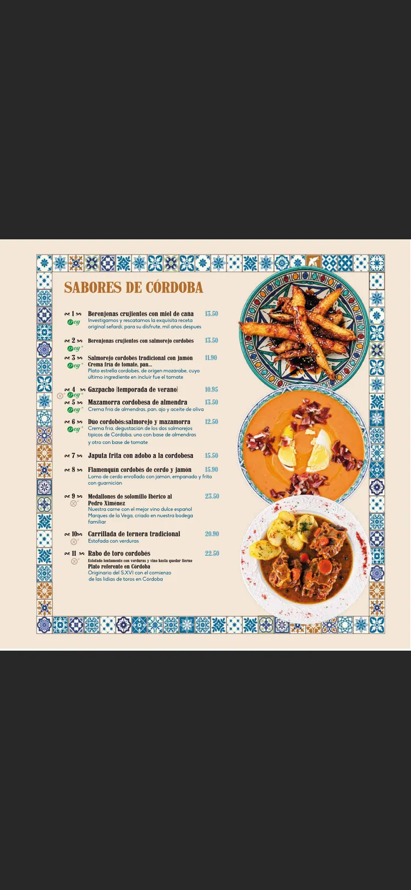
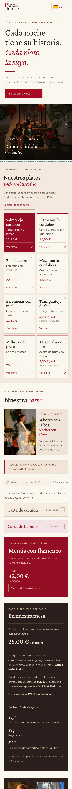
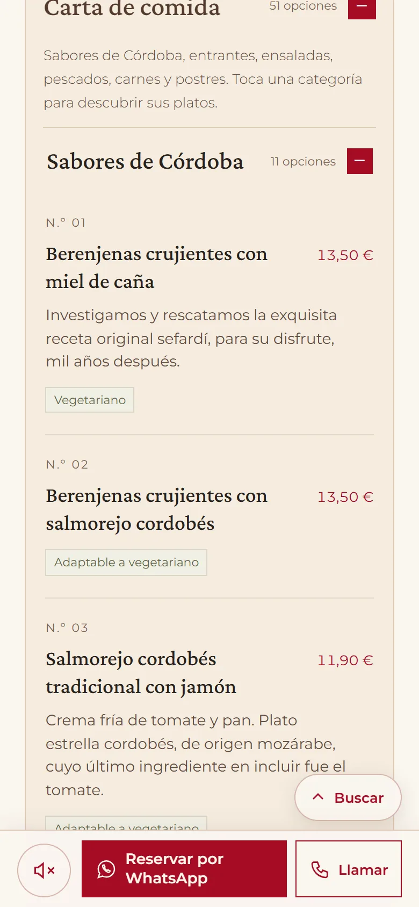
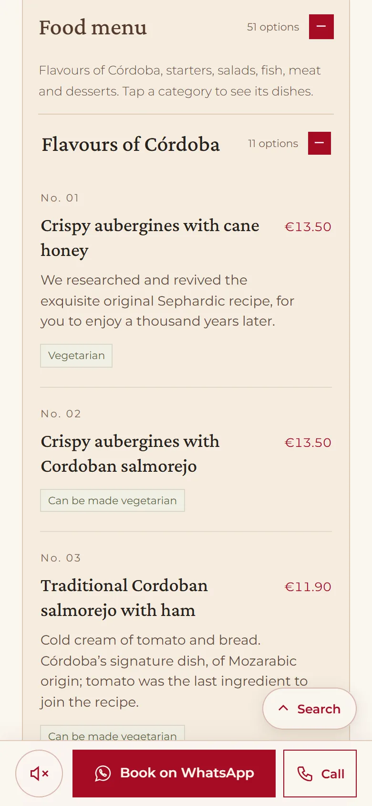
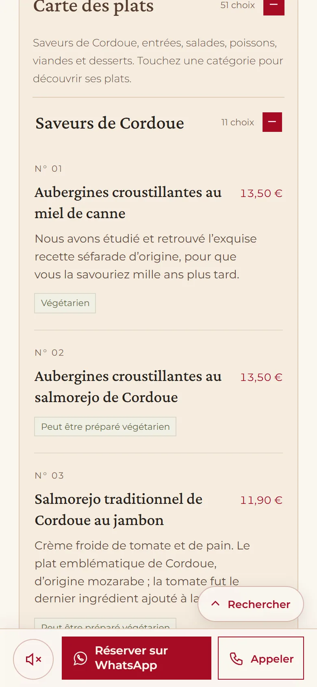
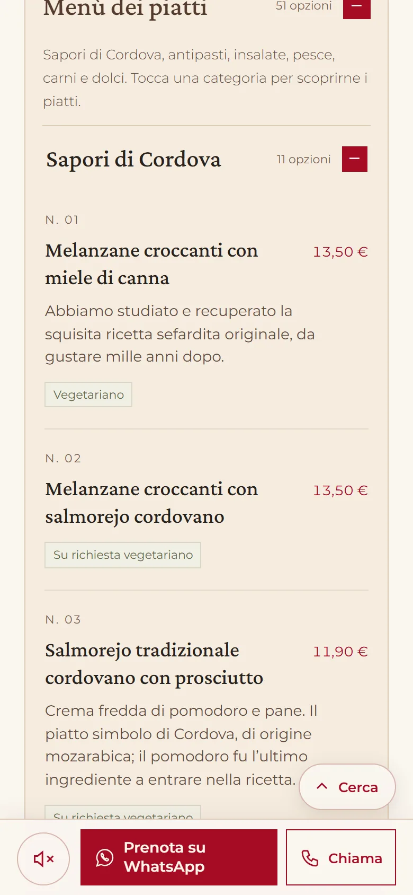
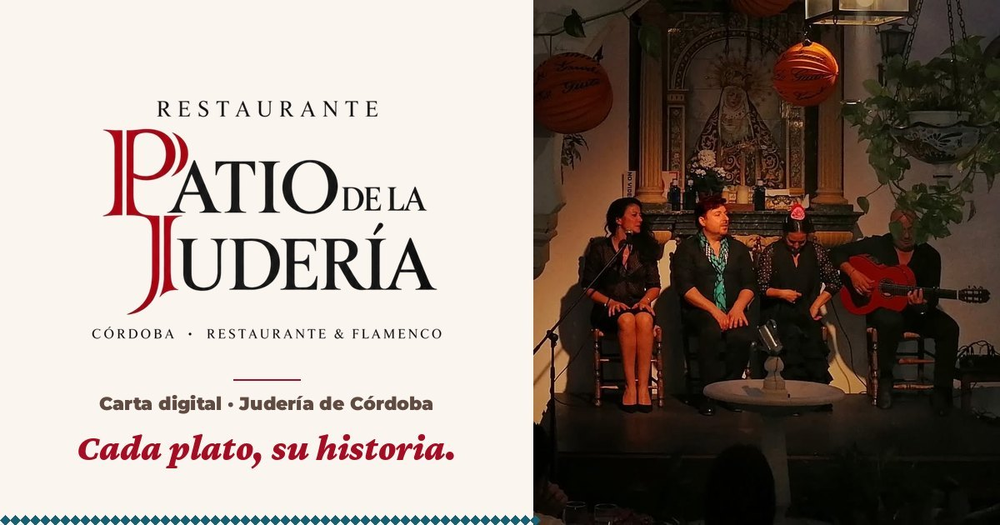

Propuesta · Carta digital
Hemos preparado la carta del Patio de la Judería en versión digital: sus platos, bebidas y menús con flamenco, con sus precios, en español, inglés, francés e italiano. No es un ejemplo: ya funciona y puede probarla ahora mismo.


Lo que ve su cliente
Hoy, quien escanea la carta recibe un PDF pensado para imprimir. En el móvil, cada plato se lee con los dedos. Así cambia la experiencia:


Cuatro idiomas
La carta reconoce el idioma del móvil: un cliente francés la ve en francés sin tocar nada. Si prefiere otro, lo cambia con un toque en la bandera.




Los 110 platos y bebidas, los menús y los avisos, traducidos y revisados uno a uno para esta carta.
El botón de WhatsApp abre un mensaje ya escrito en el idioma del cliente, listo para enviar.
El cliente entiende qué es un flamenquín o un salmorejo antes de pedir. El camarero gana tiempo.
Detalles que se notan
Al revisar la carta en PDF encontramos algunas traducciones que conviene corregir. Son detalles pequeños, pero un cliente extranjero los lee en su propio idioma. En la versión digital están todas revisadas.
Por qué una carta digital
Español, inglés, francés e italiano, automáticos. Pedidos más claros y menos dudas en el servicio.
Se cambia desde una hoja de Google, sin imprenta ni diseñador. La traducción se actualiza sola.
Los tres menús con espectáculo tienen su propia página, con precio, platos y botón de reserva.
WhatsApp y llamada en cada pantalla, con el mensaje ya escrito. Sin intermediarios ni comisiones.
Sus colores, su logo, fotos del tablao y música flamenca que el cliente puede activar si lo desea.
Se abre con la cámara del móvil, sin descargar nada. Un solo pago, sin mensualidades.
Un solo enlace, en todas partes
No es solo para las mesas. El mismo enlace sirve en cada lugar donde un turista decide dónde cenar en la Judería, y siempre muestra la carta actualizada.

¡Hola! Aquí tiene nuestra carta: patiodelajuderia.com/carta
Al compartir el enlace de su web aparece su logo y una foto del tablao.
Usted tiene el control
Nada de pedir cambios ni esperar a nadie. La carta lee una hoja de cálculo que usted maneja desde el ordenador o el móvil.
Precio, nombre o descripción, en las columnas amarillas.
Las columnas grises de inglés, francés e italiano se actualizan automáticamente.
En unos minutos, en los cuatro idiomas. ¿Se acabó un plato? Escriba NO y desaparece.
Qué incluye
Inversión
50 % al confirmar y 50 % al publicar. Por transferencia.
Lista para entregar en 48 horas desde la confirmación: la carta ya está hecha, solo falta su revisión.
Todo es suyo y solo ustedes tienen acceso. La carta va en su dominio y la hoja de Google en su cuenta. Nosotros solo entramos si ustedes nos invitan.
Cambios de diseño o fotos nuevas después de los 30 días: por encargo, cuando los necesite.
Próximos pasos
Pruébela en su móvil y díganos cualquier cambio de platos, precios o fotos.
Hacemos los ajustes y entregamos los archivos a su programador para publicarla en patiodelajuderia.com.
Tarjetas y cartel con QR para imprimir, imágenes para redes y su hoja de Google, creada en su propia cuenta.
QR en las mesas, enlace en Instagram, Google Maps y WhatsApp. Usted la actualiza cuando quiera.
Preguntas frecuentes
No. Apuntan la cámara al QR y la carta se abre en el navegador del móvil. Funciona en cualquier teléfono, sin aplicaciones ni registros.
Sí. Muchos restaurantes mantienen la carta impresa para quien la prefiera y usan la digital para los idiomas y para compartirla. Conviven sin problema.
Lo cambia usted en la hoja de Google y la carta se actualiza en unos minutos, ya traducida. Si una traducción automática no le convence, puede corregirla en la misma hoja.
No. Es un único pago. No hay cuotas, ni comisiones por reserva, ni alojamiento con nosotros, ni permanencia.
Solo ustedes. La carta se publica en su propio dominio, la coloca su programador, y la hoja de Google se crea en su cuenta. No guardamos contraseñas ni accesos. Si algún día necesitan ayuda, nos invitan a la hoja y después nos quitan el permiso.
No. La carta no usa cookies ni publicidad, y no pide datos a nadie. Las reservas llegan directamente a su WhatsApp o a su teléfono.
COFREP es el servicio de cartas digitales de TuimagenStudio, un estudio de diseño de Argentina que trabaja a distancia con negocios de allí y del extranjero. Todo se hace por WhatsApp o por correo, sin que tenga que moverse del restaurante.
¿Hablamos?
Escríbanos por WhatsApp con cualquier duda o cambio. Respondemos en el día.